✈️
Vuelos
Milano Malpensa → Sevilla
Salida 06:30 · llegada 09:05
WizzAir
Una escapada llena de historia, arte, tapas y cultura andaluza.
28 septiembre — 2 octubre 2026
Descubrir el viajeTodo lo necesario para disfrutar de cinco días en la capital de Andalucía.
Milano Malpensa → Sevilla
Salida 06:30 · llegada 09:05
WizzAir
Hotel Patio de las Cruces
Calle Cruces 10, Casco Antiguo
Desayuno no incluido
Moya Brunch
A 100 m del hotel
1 minuto a pie
Bodega Santa Cruz
Comida tradicional andaluza
10–20€ por persona
Hotel Patio de las Cruces está situado en el corazón del Casco Antiguo de Sevilla. Es una base ideal para explorar los principales monumentos a pie.
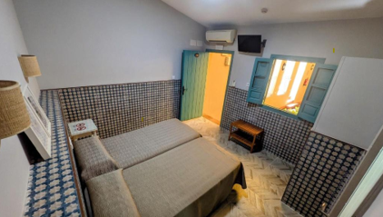
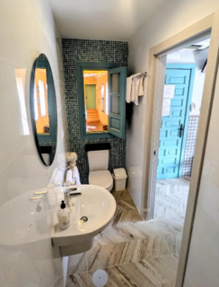
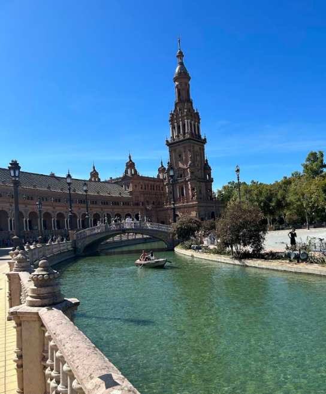
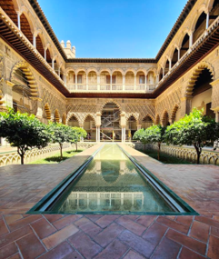
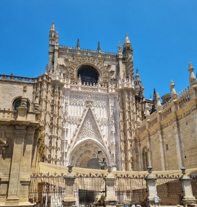
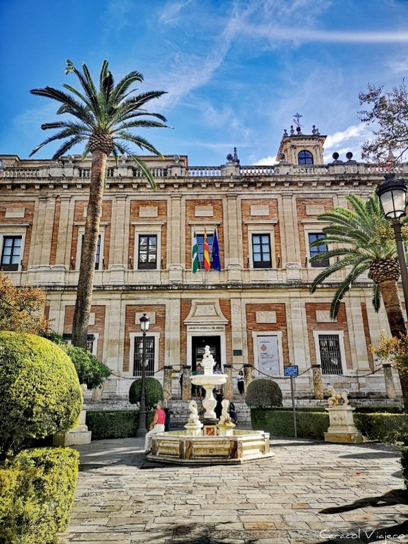
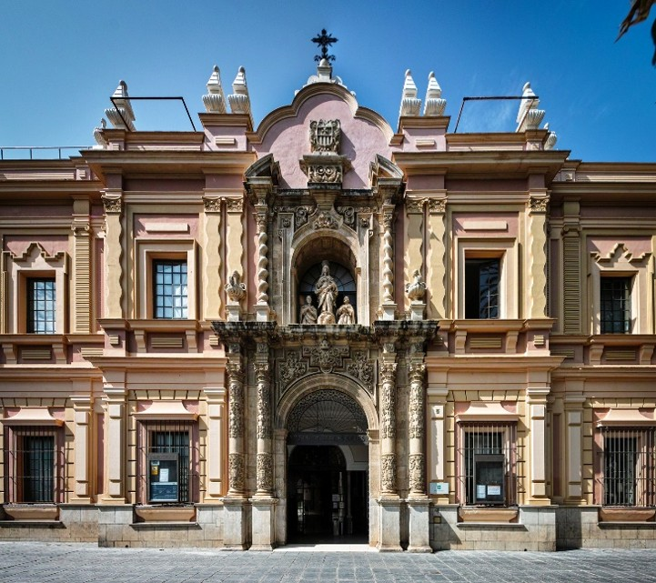
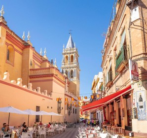
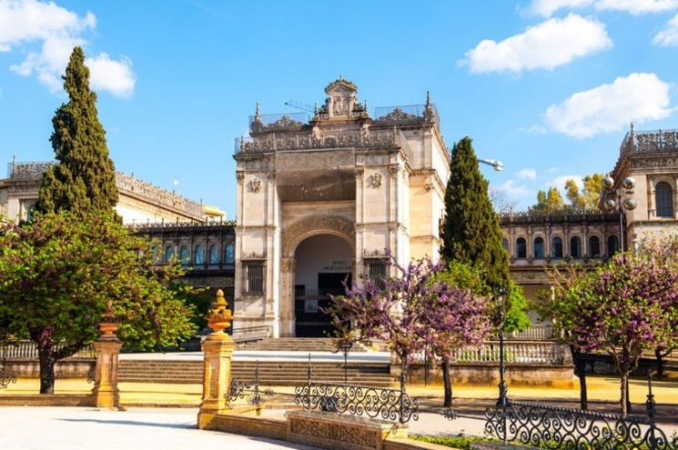
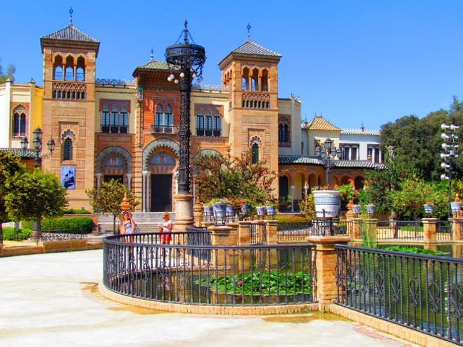
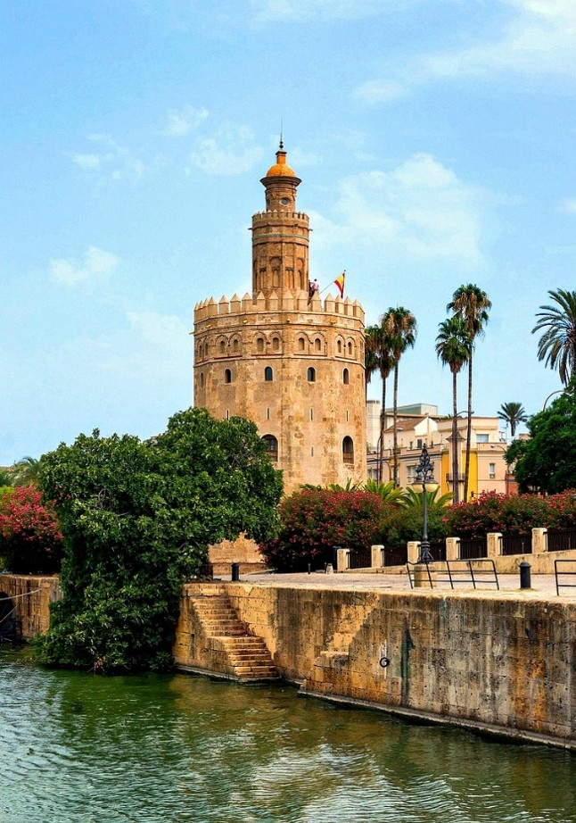
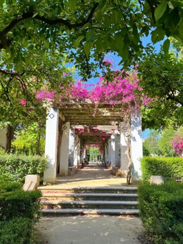
En esta época, el tiempo suele ser agradable, con temperaturas aproximadas de 15–29 °C. Puede llover algún día.
Gazpacho andaluzEspinacas con garbanzos
Para comer tapas y cocina tradicional: Bodega Santa Cruz — Las Columnas, C. Rodrigo Caro, 1. Está a unos cuatro minutos a pie del hotel.
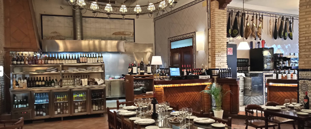